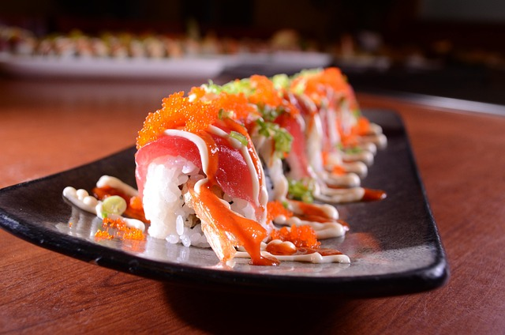

Japan’s sushi culture is a world of contrasts — from the glittering Michelin-starred restaurants of Tokyo to tiny counters tucked away in countryside towns. Most travelers only get to see the polished, high-end side of sushi, but beneath that surface lies a secret network of hidden sushi gems — intimate family-run shops and quiet local bars where true Japanese sushi culture lives and breathes.
These are not places you’ll find in glossy travel guides. They’re whispered about among locals, handed down through word-of-mouth, and often tucked behind unmarked doors. If you truly want to understand the heart of sushi, you must step off the beaten path and explore these local treasures.
The Spirit of the Hidden Sushi Bar
In Japan, sushi isn’t just about the food — it’s about the relationship between the chef and the guest. Walk into one of these hidden gems, and you’ll notice something instantly different. There are no menus, no loud chatter, no flashy décor. The chef watches you closely — studying your pace, your reactions, and even your chopstick grip — before carefully deciding what to serve next.
This one-on-one dining experience reflects the philosophy of omotenashi — Japan’s unique form of heartfelt hospitality. It’s the same spirit that defines the discipline of shokunin explored in The Art of Sushi: How Japanese Chefs Turn Fish into Masterpieces. Every gesture is deliberate, every piece of sushi crafted to honor the guest’s presence.
While most visitors flock to famous spots in Tokyo or Osaka, locals often seek smaller sushi shops where the focus is on freshness, craftsmanship, and community. In Tokyo’s backstreets, you might stumble upon a 6-seat counter serving anago (saltwater eel) grilled over charcoal and brushed with homemade sauce that’s been passed down for generations. In Kyoto, an elderly couple might serve sabazushi — mackerel pressed with rice and wrapped in bamboo leaves — a recipe their family has perfected over a century.
These authentic flavors, rooted in regional traditions, are a beautiful reminder of the local ingredients celebrated in Beyond Tuna and Salmon: Rare Sushi Ingredients Found Only in Japan.
Step into one of these family-run sushi shops, and it feels like entering someone’s home. The chef greets you warmly, perhaps with a shy smile, and his wife might serve you tea or miso soup while chatting about the weather. Many of these shops are run by the same families for two or even three generations. Their secret sauces, knife techniques, and rice recipes are guarded traditions — unchanged for decades.
It’s this deep sense of heritage that connects directly with the story told in The Evolution of Sushi: From Edo Street Food to Global Cuisine. The roots of sushi’s global success were planted in these humble local counters, where tradition has quietly survived modern trends.
he Beauty of Simplicity
Hidden sushi bars often reject luxury. Instead, they embrace simplicity. The counters are made of warm hinoki wood, the lighting soft, and the conversation minimal. You won’t find extravagant menus or digital screens — just the sound of a knife slicing through fish and rice being gently molded by skilled hands.
This minimalism mirrors the purity at the heart of sushi itself. The right etiquette — knowing when to use chopsticks, how to dip your sushi, and when to thank the chef — elevates the experience. You can learn more about these customs in Sushi Etiquette 101: How to Eat Sushi Like a Local.
“The soul of sushi isn’t found in famous restaurants — it lives quietly in hidden corners, where humble masters shape perfection one piece at a time.”
Hidden Regional Treasures
Japan’s regional sushi traditions are full of surprises. In Hokkaido, chefs serve sushi topped with freshly caught uni (sea urchin) so creamy it melts on your tongue. In Toyama Bay, locals enjoy masuzushi — trout pressed into rice and wrapped in bamboo leaves, sold in circular wooden boxes.
Each region tells a different story — of sea, soil, and season. Discovering these local varieties is like traveling through Japan one bite at a time. If you’re planning your sushi pilgrimage, don’t miss Top 10 Sushi Experiences You Must Try in Japan — it pairs perfectly with this journey into lesser-known spots.
Hidden Gems in the Big Cities
Even in Tokyo — a city packed with world-famous sushi restaurants — true locals have their secret favorites. Some of these places don’t even have signs outside. You have to know someone who knows someone. Take, for example, a tiny sushi counter in Nakameguro where the chef serves only eight customers per night. There’s no reservation website; you call the number handwritten on a matchbox given by a friend. Inside, you’ll find some of the most balanced nigiri in Tokyo — fish sliced in perfect rhythm with your breath, rice at body temperature, and just the right hint of wasabi.


A True Connection with the Craft
Visiting these hidden gems gives you a deeper understanding of sushi’s soul. You’re not just eating — you’re witnessing a centuries-old ritual. When the chef places a piece of sushi in front of you, it’s a silent exchange of trust. He’s offering his art; you’re offering your attention. In that brief moment, the world outside disappears. That’s what makes these hidden gems so magical — they remind us that sushi is not about status, but about connection. This same philosophy echoes throughout The Art of Sushi and The Evolution of Sushi — both of which explore how mastery and mindfulness have guided this culinary art from its roots to today.
The Future of Hidden Sushi Spots
As tourism continues to grow in Japan, many fear that these small local shops will fade away. Yet, a quiet movement is underway — younger chefs are returning to their hometowns to reopen or preserve family sushi bars. They’re using modern techniques while respecting their elders’ traditions, ensuring that these hidden gems continue to thrive. Some even blend tradition with technology — sharing their stories online, but keeping their exact locations discreet. It’s a beautiful balance — much like sushi itself — between old and new, local and global, simplicity and sophistication.
Final Thoughts
The next time you visit Japan, don’t just follow the tourist maps. Let your curiosity guide you down narrow alleys, through quiet neighborhoods, and into places where the air smells faintly of soy and sea breeze. There, you’ll find the real heart of sushi — warm smiles, humble craftsmanship, and unforgettable bites. Because the true essence of sushi doesn’t live in luxury — it lives in these hidden gems, where every grain of rice and every slice of fish tells a story of devotion and love for the craft.